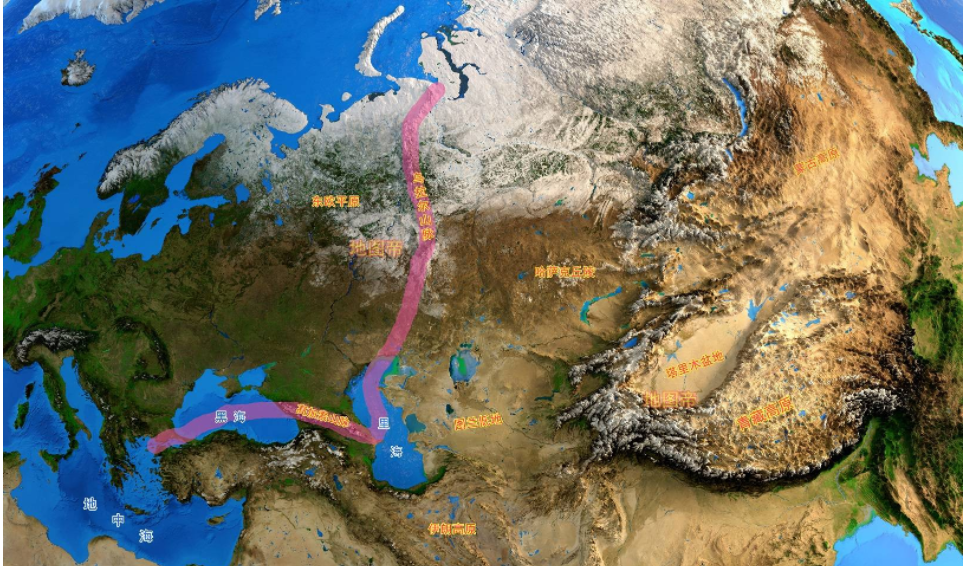

收录于合集

导读
俄乌危机已经持续半月有余，在这样的格局下，怎样从全球视角来把握国际发展的脉络？从俄罗斯对顿巴斯地区发起特别军事行动以来， 美、俄、欧的大国博弈呈现着一个怎样的新局面？亚洲地区是追随欧洲的脚步，也同样落入拉帮结派、纷争对抗的火炕，还是另辟蹊径，走向一条稳健克制、尽可能避免冲突、和平发展的共存之路？
本文从“全球转型”这一概念入手，从全球转型的视角来看待当代危机局势。“全球转型”是近年来国际问题研究界为探究当代世界变迁所提出的一个概念。21 世纪初以来，全球转型经历了从“中心化”到“非中心化”的转折。在经历冷战后的高速增长阶段以后，全球经济进入相对低速增长时期。在此时期，国际竞争将更加残酷无情。与欧洲呈现出胶着对抗的状态形成对比，亚洲的成长与发展有望成为长期趋势。 作者认为，亚洲需要通过自己的努力，避免西方危机对于亚洲的扰动，而且可以积极有为地影响西方，为亚洲以及全球发展创造有利的国际环境。 欧亚系统科学研究会特编发此文，供读者思考。文章原刊于《俄罗斯研究》，仅代表作者本人观点。
欧洲对抗与亚洲突围：
全球转型中的欧亚新博弈

▲ 图源：互联网
岁末年初，伴随着各大国际组织与智库关于世界经济预测结果的发布，伴随着有关欧洲战端重启的危险舆论之下美俄、北约、欧安组织峰会的落幕，也伴随着人们普遍期待的疫情转缓非但没有出现、反而突然又四处频频告急的状况，国际局势转入了一个更加扑朔迷离、充满着不确定前景的进程。在这样的格局下，从怎样的全球视角来把握国际发展的脉络？从俄罗斯对顿巴斯地区发起特别军事行动以来，美、俄、欧的大国博弈呈现着一个怎样的新局面？亚洲地区是追随欧洲的脚步，也同样落入拉帮结派、纷争对抗的火炕，还是另辟蹊径，走向一条稳健克制、尽可能避免冲突、和平发展的共存之路？
这是人们所必须找到答案的几个关键问题。
01
全球转型: 理解当前国际格局走向的重要范畴
“全球转型”是近年来国际问题研究界为探究当代世界变迁所提出的一个概念。这一概念看似平常，但含有新意。 其基本思想之一是，19世纪形成的全球转型，深刻、持续而全面地改变了国际关系。 起初，以工业化、观念与制度重构为背景的全球转型，造成了一个高度不平等、中心与边缘分化的国际秩序。随着全球层面现代性的不断加强，中心与边缘的差距逐渐地且越来越快地缩小。变化的趋向，是从19世纪和20世纪“有中心的全球化”逐步转向今天的“去中心或者多中心的全球化过程”。 18世纪末到1945年“西方殖民式”的全球转型是其第一阶段。1945年到21世纪头十年“西方全球化”的全球转型是其第二阶段。21 世纪第二个十年左右“去中心化或多中心化”的全球转型，则是其第三个阶段。 提出这一理论的学者倾向于认为，2008年的全球金融危机，是从“中心化”转向“非中心化”的全球转型的转折点。
全球转型的基本思想之二，是指全球转型是一个涵盖了三个向度主要内容的宏大进程。 其一，是指关键国家（主要是指世界大国，也包括若干起重要作用的地区国家）的国内转型；其二，是指同步发生的世界秩序的改革与演进；其三，是指在国内转型与世界秩序重构这两大过程之间的各国的对外关系与对外战略。这三个组成部分互相影响，互相激荡，又互相紧密关联，使全球转型成为一个密不可分的整体性过程。
全球转型的基本思想之三，是指若干长时段因素浮出水面，这些因素势将深刻作用于全球转型发展走向。其一，文明、地理、气候、人口等因素的回归。 比如，文明因素的重现，不光成为新兴国家成长的强劲支柱，也显现出当前东西方博弈并非仅仅是制度之争，其甚至涉及文明的兴衰。因此，既要自主自信，又要互学互鉴，避免文明冲突，探索人类文明新形态的构建。又比如地理因素，地缘政治的激化与抬升，重新参与了大国间的博弈。如何运筹帷幄，发挥地缘空间的优势；如何因势利导，加强周边合作团结的聚合力，都成为战略运筹的重大内容。 其二，冷战后的全球经济高速增长过去之后，一个相对低增长的长周期将会长期延续。 这一背景之下的国际竞争，毫无疑问将变得残酷无情和十分严峻。 其三，世界政治经济不平衡规律之下，西方不亮东方亮，亚洲的成长与发展有望成为长期趋势。 想当年，西方列强是通过在东方的扩张与掠夺，以此作为在西方博弈的资源与基础；但是今天，不断强劲发展的东方如何通过自己的努力，不光需要避免西方危机对于东方的扰动，而且如何积极有为地影响西方，为东方以及全球发展创造有利的国际环境，这是从全球转型的视角来看待当代危机局势的一个重要问题。
02
峰会落幕: 欧洲僵持对抗势将延续 ****
刚刚结束的俄美峰会、俄-北约峰会、欧安组织峰会，不出人们所预料，在没有任何重大突破与进展的情况下落幕。 俄方立场表达得很清晰：其一，以法律文本保障北约不东扩及乌克兰不加入北约；其二，不在其邻国部署对俄罗斯安全构成威胁的进攻性武器，不进行携带核武器及其他进攻性武器的大规模军事演习；其三，恢复1997年欧洲安全架构的原则性计划 ——当时俄与北约签署了《俄联邦与北约相互关系、合作和安全基本文件》，并以此为基础创建了后来的俄罗斯- 北约理事会。拉夫罗夫在接受媒体采访时强调：这是普京总统所坚持的立场。这是三个关键的要求。其余的建议取决于这三项要求被处理的情况而定。与此相对应， 美方的立场也相当强硬：不允许俄罗斯入侵乌克兰；不放弃对俄罗斯加大制裁力度；不会接受北约不东扩；不会表态不接受乌克兰加入北约。 虽然美方表示可以讨论有关中程导弹协议、在俄罗斯邻国举行军事演习的规模等问题，但在关键问题上俄罗斯与西方决然对立的立场表明：它们之间的紧张抗衡状态将会继续延展。
值得关注的是，俄罗斯在当前局面下的一系列新表现： 首先，俄罗斯从事关国际关系发展的原则底线提出要求、开启谈判，而非在枝节问题上与对手周旋。 显然，俄罗斯也非常明白，美国不可能从北约东扩的立场后退，因此，目前的事态表明，俄罗斯已经准备经历一个长时间讨价还价、从底线发起绝地反击的艰难过程。 其次，俄罗斯是以积极主动备战的态度来推动与西方之间的对话。 无论俄罗斯是以国内军事部署和部队调动的方式进行威慑，还是真的发起军事行动，都是为了迫使美西方坐到谈判桌前。诚如谢尔盖·卡拉加诺夫所言，就是要让美国明白，俄罗斯对此的态度是非常认真的。 再次，俄罗斯也通过哈萨克斯坦爆发危机期间迅速派遣集安维和部队进入的果断行动，显示俄罗斯有选择地维护原苏联空间的强硬立场和决心 。
相形之下，美国虽依然坚持其一贯立场，通过加强军事联盟与进行意识形态动员，来与俄罗斯对抗。 但是，其一，拜登早早表示美国不会派军队与乌克兰一起作战；其二，谈判过程中美方还是表达出在中程导弹等问题上可以有协商余地的态度。 与俄罗斯毫不退让的强硬立场相比，这表明，美国尽管态度强硬，在主要方面不可能有任何松动，而且的确有可能继续加大制裁压力——甚至如同美国国会议员所提出的对普京本人进行制裁，然而美方也给人以这样的印象，即在次要领域尚有妥协的可能，以备给过于紧张的形势降温。至于欧盟的立场，更是耐人寻味。年初美俄之间三场会谈所释放的一个重要信息，便是双方已经抛开欧洲直接进行面对面对话。而欧洲主导的新老明斯克协议实际上已被束之高阁。 这一形势，表明欧盟自身迄今为止已没有能力直面危机，也无法摆脱欧洲左右摇摆的传统立场。 因此，在美国和欧洲难以卸除传统意识形态包袱、难以扭转国内严重分裂、也难以不把树立外敌作为凝聚国内政治的杠杆手段的背景之下，俄与美欧抗衡难有出路。
俄罗斯与西方的对峙将会是一个相当长期的过程，还取决于存在着若干关键的结构性背景。
其一，欧洲面临的是一个环环相扣的套环式的国际结构。首先是整个欧洲面临的总体安全架构问题。冷战后一系列协议并没有能够真正保障欧洲安全。 而所建立的机构，如欧洲安全与合作组织，虽然有最广泛的美、俄、欧等各方参加，但是面对着如此复杂的国际环境，所有这些协议与机制形同虚设。俄罗斯人非常清楚，只有欧洲总体格局有了安排，才有俄罗斯的安全可言。 其次，乌克兰问题的出路。明斯克协议之无法落实，就如同欧盟所主导的科索沃危机同样无法解决，表明了欧洲无力担当重任。 所以，俄罗斯才干脆直接与美国对话。 至于当前的乌克兰危机， 美国虽然表示无意派军队到乌克兰前线直接参战，但是美国通过提供军事援助支持乌克兰政府，表明 美国决意要让乌克兰前线始终保持一定的冲突状态，以利于美方在原苏联空间的介入，来调处对欧、对俄关系。 这三个层次的问题，实际上是环环相连。其中的一个解决不了，其余的问题也难以找到出路。所以，这是一个相当长期才能解决的问题。
其二，在一个“后事实、无真相”的世界，俄罗斯任何的军事部署和军事行动都会被西方夸大渲染，从而为其打压对手、动员盟友、转移国内问题的视线寻找借口。 与此相关，一个与当下的纷争有着密切关系的北约东扩的政治合法性问题，依然成为俄罗斯与美欧关系的发酵剂，受到全世界舆论的关注。美国国务卿布林肯信誓旦旦地辩解：美国从未承诺北约不进行东扩。但是，就在近期，美国国内媒体连续登载了 2017 年美国国家档案馆所公布的档案：不光是前国务卿贝克说过，美国“一英寸也不东扩”，而且说了三遍；甚至，包括美国与欧洲诸多国家元首与高官在内的一大批人都明明白白地承诺北约不再东扩。只不过是当年虚弱而无能的苏联领导人无法使这些承诺成为一纸文书，从而酿成今天的祸患。这样一种“后事实、无真相”的局面，将会极大地干扰与影响国际政治交往的正常化，成为制造敌意、引发冲突的长期诱因。
03
西线抗衡下的东线突围 ********
在欧洲方向俄罗斯与西方的长期抗衡已成定势的格局下，人们很自然地会将目光转向亚洲。亚洲能不能为当今局势稳定与发展有所贡献呢？
20 世纪末，法国经济学家吉普鲁曾经提出 “亚洲地中海” 的概念。他认为，西太平洋地区——指的是 从日本海至马六甲的广大沿海国家与地区， 可以像欧洲地中海一样，通过长期经济繁荣发展推动各国合作，而且可以在政治、社会、文明构建等各个领域为人类做出贡献。
面临美国在亚太地区拉帮结派（奥库斯、印太四国、五眼联盟、包括北约非常可能在不远的将来把中国作为主要威胁等等的战略新动向）的巨大压力，中国不怕对抗，决心以实力捍卫尊严与自身的利益。但同时， 必须发挥地缘经济的巨大优势，以合作抵御对抗，以共赢争得民心。 在此背景下，借助“亚洲地中海”的构想，可以在西太平洋地区发起一轮新的合作高潮，作为迎战强敌的基本战略铺垫。
推动“亚洲地中海”这一构想的客观背景在于： 第一，当今世界格局除了中美紧张对峙之外，还存在着一个广大的中间地带，包括俄罗斯、韩国（朝鲜）、东盟等方面。 如果运筹得当，也许还能推动日本、澳新的正面反应；从长远看，把欧洲对亚太事务的介入，转化成经济合作；而且，有理由在全方位的长远经济合作的背景下，最终把美国对华的挑战与遏制转化成互利共赢。“化敌为友”是当前对美应对的一个重要方面。而“化敌为友”的最重要和最可能的抓手，就是类似于“亚洲地中海”的战略选择。
第二，今后国际大循环的内容构成，显然将会从以往 30 年欧美市场为绝对主导，逐渐地演变成为在继续以欧美市场为重点发展目标的同时，在大陆欧亚地区寻找战略支点，配合欧美方向的运作。 “一带一路”倡议提出的初衷，就是希望在欧亚大陆西向运筹，从而找到战略突破口。多年来，“带路”推进在许多方面都有斩获，而与俄罗斯的对接，也在不断磨合之中。在这样背景下，从一个更为广谱的合作路径，去寻找中俄——并通过中俄进一步向欧亚大陆纵深地带发展——的合作路径。换言之，“亚洲地中海”概念的提出，是当下我们重新估量对俄合作战略的一个可供选择的抓手。
第三，新时期俄罗斯的东向政策，更多的是希望包括中国在内的亚太国家以多边方式介入合作进程。 俄已与日本在远东建立投资合作关系。普京也明确承诺了包括南千岛群岛在内的投资税收优惠。韩国在远东西伯利亚地区的能源、交通管道、农业等方面，都有长期对俄合作的经验积累。俄与东盟的合作也在推进。因此，“亚洲地中海”构想的提出，有助于俄罗斯所期待的多边方式的合作。
第四，《区域全面经济伙伴关系协定》（RCEP）的最新进展，将是推进“亚洲地中海”构想的一个机会。 因为这不仅可以尽可能地避免俄罗斯发展与亚太进程的脱节，同时，RCEP 与“亚洲地中海”构想并行推进，也将使得这两者之间能够找到更多合作机遇。比如，远东基础设施建设薄弱，甚至一些沿海港口已经开始坍塌。俄罗斯专家开始构想重新设计航线，采用多种联运方式。比如，日本与越南已经对使用扎鲁比诺港运输农产品表现出兴趣。日韩正在考虑实施远东港口与铁路的联运，马士基公司也表达了有兴趣参与。此外，从太平洋上的东方港至黑海港口新罗西斯克的集装箱列车，装载着来自中、韩、日的货物，开往土耳其和其他地中海东部国家。俄罗斯运输部已经提出了在“滨海-2”号项目框架内建立无人运输走廊的构想。为此，该部门正在设计一条 30 公里的新公路，供机器人卡车使用。这条新公路将把中国港口与俄罗斯海上码头（目前尚无，可以通过中俄合作建造）相连接，以提供高速自动化的物流货物处理。俄方得知，上海、青岛已经开发出相关技术。俄方非常期待中国东部与南部港口（希望至少有 10 个）能够积极参与远东的港口海运合作。中国沿海地区，特别是作为国际海运中心的上海，可以发挥更大作用。
排版 | 屈媛媛
文章为欧亚系统科学研究会编辑，文章观点不代表本平台观点。